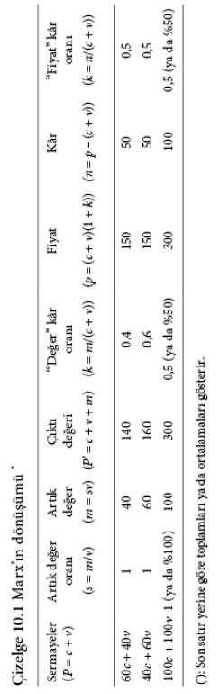

10

DÖNÜŞÜM SORUNU

Kapital’in 1. cildinde Marx, değer ve artık değer üretimiyle, 2. ciltte ise bunun dolaşım ve mübadelesiyle ilgilenir. 3. cildin büyük bir bölümü, üretimin mübadeleyle olan etkileşiminin ortaya çıkardığı bölüşüm ilişkilerini ele alır. Marx, tahlilinde, ekonomi çapında üretilen artık değerin rakip sanayi sermayeleri arasında ve bir bütün olarak sanayi sermayesi, ticari ve mali sermaye dâhil, öteki sermaye biçimleri ve toprak sahipleri sınıfı arasında bölüşümüne odaklanır.
Marx, sanayi sermayecilerinin genellikle aynı yatırımla farklı artık değer miktarları ürettiklerini, çünkü her bir sermayenin istihdam ettiği değer üretici emeğin farklı miktarlarda olduğunu öne sürer. Buna karşın bütün sermayeler (bir eğilim olarak) eşit getiri oranlarından yararlanmak zorundadır; aksi hâlde ekonominin daha kârlı alanlarına kayarlar. Marx, ekonomi çapında sermaye ve emek dağılımı ile (başka sermaye biçimlerinin yokluğunda) sanayi sermayesince üretilmiş artık değerin dağılımını değerlerin üretim fiyatlarına dönüşümü aracılığıyla açıklar. Daha somut bir tahlil düzeyinde ticari ve mali sermayeciler ile toprak sahipleri, sanayi sermayesince üretilmiş artık değerin bir parçasını mübadele

sırasında kaparlar. Marx, bu süreçleri (burada sırasıyla 11, 12 ve 13. bölümlerde işlediğimiz) ticari kâr, faiz ve rant tahlili aracılığıyla açıklar.
Değerlerden Üretim Fiyatlarına
Marx, artık değerin ekonominin farklı kesimlerindeki sermayeciler arasında dağılımını ele alırken başlangıçta kâr oranının eşitlenme eğilimine odaklanır. Genel bir kâr oranını k = M/(C + V) olarak biçimlendirip (burada M, C ve V değer nicelikleri bir bütün olarak ekonomi için artık değer ve değişmez ve değişir sermaye derneşik büyüklükleridir) her bir sermayecinin, üretilen artık değerden, öndelenmiş sermayedeki hisselerine göre pay alacağını öne sürer. Sanki her bir sermayeci, ekonominin bütünündeki bir hisse senedinden kâr payı almaktadır. Sonuç olarak, değişmez ve değişir sermaye öndeliği ci + vi olan i’nci sermayecinin kâr payı k(ci + vi) ile gösterilir. Örneğin genel kâr oranı yüzde 50 ise ve zamazingo üreten ortalama sermayeci (sabit sermayenin değer yitirmesi dâhil, değişmez ve değişir sermayeden oluşmak üzere) 100.000 YTL öndelemişse firmanın yıllık kârları (eğilimsel olarak) 50.000 YTL olur.
Buna ilgili meta için, maliyet artı kârdan oluşan bir üretim fiyatı tekabül eder:
pi = ci + vi + k(ci + vi) = (ci + vi)(1 + k)
Basit bir örnekle açıklayalım (bk. çizelge 10.1).
Diyelim ki ayrı mallar üreten yalnızca iki tane sermaye vardır. Artık değer oranı yüzde 100 iken bunlardan biri 60c + 40v, öbürü ise 40c + 60v kullanmaktadır. Bu durumda birinci sermayenin çıktısının değeri 60c + 40v + 40m = 140, ikinci sermayenin çıktısının değeri de 40c + 60v + 60m = 160 olur.
Bu örnek ciddi bir sorunu ortaya koyar. Çünkü sermayeciler eşit para tutarları öndeler, ama değişik oranlarda c ve v kullanırlarsa, kâr oranlarının farklı olacağını ima eder. Bizim örneğimizde, birinci sermayenin yalnızca k1 = 40/(60 + 40) = yüzde 40 kaldırmasına karşılık ikinci sermaye çok daha yüksek bir kâr oranından yararlanır: k2 = 60/(40 + 60) = yüzde 60. Bu, öndelenen sermayelerin bileşimindeki farktan, bu arada görece yüksek bir değişir sermaye oranının daha yüksek bir kâr oranına yol açmasından kaynaklanır. Bu şaşırtıcı sayılmamalıdır. Yalnız emek değer (dolayısıyla kâr) yaratıyor, üretim araçları ise yalnızca değerlerini çıktıya aktarıyorsa, daha çok emek istihdam eden sermaye daha çok değer ve artık değer üretir ve öteki durumlar öyle kaldığında onun kâr oranı daha yüksek olur.
Kesimler arasında sermaye göçü olanağı varsa, farklı kesimlerde bu kadar farklı kâr oranları elde eden sermayeler uzun süre bir arada var olamaz. Bir başka deyişle, her bir sermayeci, öndelenen sermayeye eşit katkıda bulunduğu (100) için, her birinin, dağıtılan kârdan eşit pay alması (ellişer) gerekir. Bu, iki kesimde üretilmiş değerlerin farklı olmasına karşın öyledir — bir başka deyişle, farklı kesimlerde iş gören sermayeler arasında kâr oranlarının eşitlenmesi ekonominin kesimleri arasında (artık) değer aktarımını gerekli kılar.
Kısacası farklı kesimlerdeki sermayeler, meta üretmek için genellikle değişik miktarlarda emek, ham madde ve makine kullandığı için Marx, çıktıların değerleri üzerinden değil, üretim fiyatları üzerinden mübadele edildiği sonucunu çıkarır. Bu üretim fiyatları, sermaye bileşimi ci/vi’nin ekonominin bütününün ortalamasından daha büyük ya da daha düşük oluşuna göre değerlerden farklılaşır. (Çizelge 10.1’deki birinci sermaye için c1/v1 = 3/2, ikinci sermaye için c2/v2 = 2/3 olduğunu, ekonominin bütününün ortalamasının ise 1 olduğuna dikkat edilsin.)
Marx’ın Dönüşümü ve Onu Eleştirenler
Marx’ın değerler ile fiyatlar arasındaki ilişki konusundaki açıklaması, belki şaşırtıcı bir şekilde değer teorisinin en tartışmalı yönlerinden biri oldu. Başka konularda Marksizme yakınlık duyanları bile, emek-değer teorisini, geçersiz, hatta yanlış olduğu gerekçesiyle reddetmeye yöneltti.
Bu tepkinin sebebi, Marx’ın dönüşüm sorunu çözümünün hatalı olarak algılanışı ve bu sözde “hata”nın vargılarının sözüm ona geniş kapsamlı oluşudur. Eleştirinin püf noktası şudur: Marx, sermayeler kesimler arasında rekabet ettiği (ve sermaye göçü oluştuğu) zaman, metaların artık değerlerine eşit fiyatlar üzerinden mübadele edilmediğini göstermiştir. Ne var ki bunu yaparken, c ve v girdilerini (ve üretim fiyatlarının hesaplanmasında kullanılan “değer” kâr oranını) bunlar birer fiyat değil, birer değermiş gibi değerlendirmeye devam etmiştir. Bir başka deyişle, sanki Marx, eleştiricilere göre, metaların çıktı olarak “değerler üzerinden” satın alındığını (sırasıyla 140 ve 160), ama girdi olarak “fiyatlar üzerinden” satıldığını (150 ve 150) varsaymaktadır; bu ise, satış ve alış fiyatları aynı olmak zorunda olduğu için tutarsızdır.
Dengedeki bir ekonomide verili değerleri üretim fiyatlarına çevirme sorunu açısından bakıldığında bu gerçekten ciddi, ama Marx’ın tamamen farkında olduğu ve kolayca düzeltilebilecek bir yetersizliktir. Sorun, hem girdileri hem çıktıları dönüştürmekten ibaret olup, burada tekrarlanmasına gerek olmayan basit bir cebirsel yordamdır. Bu “düzeltmenin” içermeleri dolambaçsızdır: Metaların hem değerleri hem fiyatları olduğunu ve (ister teoride ister pratikte ille eşit derecede anlamlı olmayan) iki ayrı muhasebe sisteminin mümkün olduğunu gösterir. Bu muhasebe sistemlerinden biri, her bir metayı üretmek için ihtiyaç duyulan toplumsal olarak gerekli emek-zamanı, öteki ise, genel olarak, metanın satılırken getireceği para miktarını dile getirir.
“Dönüşüm sorunu”nun bu (ya da başka herhangi bir) cebirsel çözümünden daha önemlisi, bu tür nicel muammaların, düzeltilmiş cebirsel çözümün ima etmeye çalıştığı gibi Marx’ın emek-değer teorisini tökezletemeyeceği gözlemidir. Can alıcı nokta, Marx’ın, değerlerin, üreticiler arasındaki toplumsal ilişkilerin bir vargısı olarak var olduğunu, fiyat oluşumunun ise, üretim ilişkilerinin mübadele ilişkilerine çevrilmesi olduğunu göstermiş olmasıdır. Değerler, (sırf tahayyüldeki bir deneysel kavram olmayıp) var oldukları için, fiyat teorisine bulunmuş cebirsel çözümlerin doyurucu sayılıp sayılmamasına göre reddedilemez. Onun yerine, değerler ile fiyatlar arasındaki gerçek ilişkiyi teorik olarak tanımamız, tahlilî olarak da araştırmamız gerekiyor — örneğin hâkim üretim ilişkileri, niye değer biçimini doğurur ve değerler nasıl pratikte fiyatlar olarak görünüp zaman içinde değişir?
Bu gözle bakıldığında, şu noktanın kaydedilmesi anlamlı olacaktır: Geleneksel olarak kavrandığı şekliyle dönüşüm sorunu, ekonomideki farklı kesimler arasında sermayenin değer bileşimindeki (SDB) farkların içermelerine odaklanır — sanki çizelge 10.1’de c ve v birer para miktarı, 140 ve 160 birim çıktının “özgün” fiyatları, 150 ise “rekabetçe tadil edilmiş” birim fiyatlardır.
Marx’a göre durum böyle değildir. Çünkü 3. ciltte Marx, dönüşümü tamamıyla sermayenin organik bileşimi (SOB) açısından irdeler. Bu kavram ise, daha önce 8. bölümde göstermiş olduğumuz gibi (SDB’nin yakaladığı, girdilerin kendilerinin değişen değerleriyle değil) yalnızca ham maddelerin çıktılara dönüştürülme oranlarının farklı oluşunun etkileriyle ilgilidir. Öyle olunca Marx, girdilerin (c ve v) fiyatlarını geçmişte nasıl edindiğiyle daha az, farklı organik bileşimlerin fiyat ve kâr oluşumu sürecini nasıl etkilediğiyle ise daha çok ilgilenir.
Bir başka deyişle, Marx’ın sorunu şudur. Kesimlerin bir tanesinde (v kadar değişir sermaye öndelenerek istihdam edilen) verili bir canlı emek miktarı, bir başka kesimdekinden daha büyük ve (maliyeti ne olursa olsun) c ile temsil edilen bir ham maddeler niceliğini işliyorsa, üretilen metalar, yukarıda irdelendiği ve çizelge 10.1’de sayısal olarak örneklendiği üzere değere göre daha yüksek fiyatta olur. Aynı şekilde, üretimde daha büyük bir emek niceliğinin kullanılması, daha küçük bir niceliğe oranla –kesim, üretilmekte olan kullanım değeri ve ham maddelerin maliyeti ne olursa olsun– daha çok değer ve daha çok kâr yaratır. Marx’ın dönüşüm tahlilinde SDB yerine SOB’nin kullanılışı anlamlıdır; çünkü SOB, kâr oranı ile canlı emeğin değer ve artık değer ürettiği üretim alanı arasında bağ kurar. Buna karşılık SDB, kâr oranı ile metaların alınıp satıldığı ve yeni yerleşen değerlerin sermaye birikimi oranını ölçtüğü mübadele alanı arasında bağ kurar.
SOB üzerindeki vurgusu, Marx’ın, esas olarak –ham madde olarak kullanılan üretim araçlarının değeri ne olursa olsun– öndelenmiş sermayelerin farklı (artık) değer yaratma kapasitesinin fiyatlar üzerindeki etkisiyle ya da üretim araçlarını çıktıya dönüştürmek için gerekli farklı emek niceliklerinin fiyatlar üzerindeki darbesiyle ilgilendiğini gösterir. Kârın yaratılıp dağılmasının tahlilinde SOB’nin kullanılışı, artık değer ve kârın kaynağını açıkça karşılığı ödenmeyen emeğe bağladığı için önemlidir. Bu, makinelerin değer yaratmadığı, artık değer ile kârın eşitsiz mübadeleden kaynaklanmadığı ve sanayi kârı, faiz ve rantın üretici ücretli işçiler tarafından üretilmiş artık değerden alınan birer pay olduğu yolundaki iddialarını desteklemekte Marx’a yardımcı olur.
Bu bölümdeki argüman, dönüşümü ele alırken, Marx’ın, ana yolcu iktisatta (ve Marx’ın teorisinin geleneksel yorumlarında) olduğu gibi denge fiyat teorisiyle değil, üretimdeki farklar ya da değişmeler ile fiyat oluşumu arasındaki ilişkiyle uğraştığını açıklıyor. Bu, 3. ciltte, kâr oranının azalma eğilimi yasasının ele alınışına girizgâh görevi yapar (sunuş sırası bu kitapta tersine çevrilmiş olsa da). Nihayet dönüşüm sorunu ve KOAEY, genellikle iki ayrı sorun olarak görülmüştür (bir yazarın bunların her biri konusundaki tutumu çok zaman Marx’ın değer teorisi lehinde ya da aleyhinde bir taahhüt olarak okunmuş olsa da). Ne var ki bu bölümde ve bir öncekinde, SDB’den farklı olarak SOB’nin tutarlı bir şekilde kullanılmasıyla bu iki sorunun birbiriyle yakından ilişkili olduğunu saptamış bulunuyoruz. Her ikisi, üretimin mübadeleyle bütünleşmesinin yarattığı gerilimlerle, özellikle de üretim koşullarında meydana gelen fark ya da değişmelerin, özel olarak fiyat oluşumu açısından vargıları ve daha genel olarak mübadeledeki hareketlerle ilgilidir.
Tartışma Konuları ve Tamamlayıcı Okuma Önerileri
Bir kez daha, dönüşüm sorunuyla ilgili tartışma konularının ana hatları, metin içinde çiziliyor. Marx’a yakınlık duyanlar arasında bile, sorunun Marx’ın ekonomi politiğindeki başka “sorunlar”dan kopuk bir şekilde yüzüp gezerek nasıl başlı başına fiyat oluşumu üzerine bir tartışma hâline geldiği dikkate değer. Dönüşüm sorunu üzerine olan edebiyatın uçsuz bucaksız olduğuna şaşırmamak gerekir. Özgün yaklaşım, Marx (2006b, 1-2. kısımlar) içinde sunulur. Bu bölümdeki dönüşüm yorumuna Ben Fine (1983a) öncülük etmiş, yorum, Alfredo Saad-Filho (1997b ve 2006 Böl. 7) tarafından açıklanıp daha da geliştirilmiştir. Çeşitli alternatif yaklaşımlar mevcuttur; bir toplu bakış için, bk. Simon Mohun (1995) ve Alfredo Saad-Filho (2006, Böl. 2). Değer teorisini, anlamsız ve/ya da hatalı olduğu gerekçesiyle reddeden Zraffacı tahliller Ian Steedman (1977) içinde özlü bir şekilde sunulur — eleştiriler için, bk. Ben Fine (1986) ve Bob Rowthorn (1985) içindeki makaleler, ayrıca Anwar Shaikh (1981 ve 1982). Gérard Duménil (1980) ile Duncan Foley (1982), dönüşüm sorunu konusunda, Marx’taki sözüm ona muammaları çözüme bağlamanın bir aracı olarak para değerine odaklanan bir “yeni yorum” önerir. Bu yaklaşım, Ben Fine, Costas Lapavitsas ve Alfredo Saad-Filho (2004) ve Alfredo Saad-Filho (1996) tarafından eleştirel olarak gözden geçirilir.